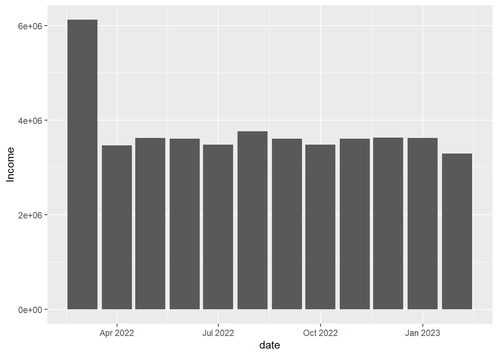

pacman::p_load(plotly, knitr, patchwork, tidyverse, ggthemes,hrbrthemes, ggstatsplot, ggdist, png, gifski, nortest)Take-home_Ex01
1. Task and Dataset
This exerises aims to reveal the demographic and financial characteristics of the city of Engagement, using appropriate static and interactive statistical graphics methods. It also requires a user-friendly and interactive solution that helps city managers and planners to explore the complex data in an engaging way and reveal hidden patterns.
The dataset consists of a sample survey of 1000 representative residents that collects data related to their household demographic and spending patterns, among other things. There are primarily two datasets used in this exercise
- ’FinancialJournal.csv”: Contains 1513635 number of daily transaction records (different categories of income and expenses) over a period of twelve months from March 2022 to February 2023.
- ’Particpants.csv” : Contains demographics information like household size, age, education level, interest groups, joviality index and whether each household has kids.
In this exercise, each dataset will be cleansed separately and then joined by ‘participantID’ as primary key to form the final dataset used for further analysis.
2. Data Preparation
2.1 Install and load the required libraries
The code chunk below uses pacman::p_load() to check if packages are installed. If they are, they will be launched into R. The packages installed are
plotly: Used for creating interactive web-based graphs.knitr: Used for dynamic report generationpatchwork: Used to combine plotstidyverse: A collection of core packages designed for data science, used extensively for data preparation and wrangling.ggthemes: Provide additional themes forggplot2ggstatsplot: Used for creating graphics with details from statistical tests.ggdist: Used for visualising distribution and uncertainty
2.2 Import the dataset
The datasets are imported using tidyverse’s readr::read_csv() function.
’FinancialJournal.csv” is stored as finance variable.
finance <- read_csv('data/FinancialJournal.csv')# A tibble: 6 × 4
participantId timestamp category amount
<dbl> <dttm> <chr> <dbl>
1 0 2022-03-01 00:00:00 Wage 2473.
2 0 2022-03-01 00:00:00 Shelter -555.
3 0 2022-03-01 00:00:00 Education -38.0
4 1 2022-03-01 00:00:00 Wage 2047.
5 1 2022-03-01 00:00:00 Shelter -555.
6 1 2022-03-01 00:00:00 Education -38.0Check for empty values in the finance table using the is.na() function.
any(is.na(finance))[1] FALSE’Particpants.csv” is stored as ptcp variable.
ptcp <- read_csv('data/Participants.csv')# A tibble: 6 × 7
participantId householdSize haveKids age educationLevel interestGroup
<dbl> <dbl> <lgl> <dbl> <chr> <chr>
1 0 3 TRUE 36 HighSchoolOrCollege H
2 1 3 TRUE 25 HighSchoolOrCollege B
3 2 3 TRUE 35 HighSchoolOrCollege A
4 3 3 TRUE 21 HighSchoolOrCollege I
5 4 3 TRUE 43 Bachelors H
6 5 3 TRUE 32 HighSchoolOrCollege D
# ℹ 1 more variable: joviality <dbl>Checking for empty values in ptcp table using the is.na()` function.
any(is.na(ptcp))[1] FALSE2.3 Data Issues and wrangling
I will discuss the issues in the datasets and proposed cleaning methods.
2.3.1 finance dataset issues:
participantId should be converted from
<dbl>format to<chr>format. It should be a categorical and not numerical data type.timestamp should be converted from
<dttm>format to<date>format as I will not be analysing time in this exercise.Negative values of amount that belong to the expenses categories should be converted to positive values. The amount will also be rounded to two decimal places.
The code chunk below does the following:
use the
as.character()function to convert participantId to<chr>formatcreate a new column month_year by extracting the year and month from the timestamp column using the
format()function with the%Y-%mformat specifier.use the
abs()function to convert negative values amount to positive and round the values to 2 decimal places using theround()function.
# Convert participantId to character
finance <- finance %>% mutate(participantId = as.character(participantId))
# Extract month and year from timestamp
finance <- finance %>%
mutate(month_year = format(timestamp, "%m-%Y"))
# Transform negative amounts to positive and round to 2 decimal places
finance <- finance %>%
mutate(amount = abs(amount),
amount = round(amount, 2))A check for duplicates using the duplicated() function reveals that there are 1,113 records of duplicates.
- The
duplicated()function to identify the duplicate rows. It returns a logical vector indicating whether each row is a duplicate of a previous row in the data frame. We can then use this logical vector to subset the data frame and show the duplicate rows. The logical vector is stored in a filter duplicated_rows which is used to subset thefinancedata.
# Show duplicate rows
duplicated_rows <- finance[duplicated(finance),]
glimpse(duplicated_rows)Rows: 1,113
Columns: 5
$ participantId <chr> "0", "0", "1", "1", "2", "2", "3", "3", "4", "4", "5", "…
$ timestamp <dttm> 2022-03-01, 2022-03-01, 2022-03-01, 2022-03-01, 2022-03…
$ category <chr> "Shelter", "Education", "Shelter", "Education", "Shelter…
$ amount <dbl> 554.99, 38.01, 554.99, 38.01, 556.55, 12.81, 554.99, 38.…
$ month_year <chr> "03-2022", "03-2022", "03-2022", "03-2022", "03-2022", "…unique()function is used to remove the duplicate rows formfinancedata
# Remove duplicate rows
finance <- unique(finance)- Perform a final check to verify that there are no more duplicate using
any()function
any(duplicated(finance))[1] FALSEThe last thing to do is to create a new colunm date that is in <date> format using the as.Date function.
the paste0() function is used to concatenate “01-” with each value in the month_year column. This is because as.Date() requires a complete date in the format “dd-mm-yyyy”
finance$date <- as.Date(paste0("01-", finance$month_year), format = "%d-%m-%Y")
Other issues
When the finance dataset is groupby the date variable , it is noticed that the number of distinct participantID who took part in the survey was 1,011 in March 2022 and suddenly reduced to a constant value of 880 from April 2022 onwards. It seems to suggest that there are 131 residents who moved out of the city at the end of March 2022.
In the code chunk below:
dataset is group-by date and the distinct count of participantID is generated using
n_distinctfunctionthe missing dataframe is displayed below using
knitr::kable()function
missing_summary <- finance %>%
group_by(date) %>%
summarise(n_distinct=n_distinct(participantId)) %>%
rename(`Number of unique participantId` = n_distinct)
knitr::kable(missing_summary, "simple")| date | Number of unique participantId |
|---|---|
| 2022-03-01 | 1011 |
| 2022-04-01 | 880 |
| 2022-05-01 | 880 |
| 2022-06-01 | 880 |
| 2022-07-01 | 880 |
| 2022-08-01 | 880 |
| 2022-09-01 | 880 |
| 2022-10-01 | 880 |
| 2022-11-01 | 880 |
| 2022-12-01 | 880 |
| 2023-01-01 | 880 |
| 2023-02-01 | 880 |
Since 11 out of 12 months of records are missing for these 131 residents, we will delete their records from the finance dataset.
The code chunk below will extract the participantIds of residents whose records exists in March 22 but not in all April 22. The participantIds will be stored in a vector called missing_id_vector.
This code will filter the finance dataframe for rows with date equal to ‘2022-03-01’, and then perform an anti-join with a filtered dataframe containing rows with date equal to ‘2022-04-01’, based on the common participantId column. The resulting dataframe will only contain participantIds that are in ‘2022-03-01’ but not in ‘2022-04-01’. The select function is used to extract the participantId column from the resulting dataframe.
In this code, we assign the result of your code to a variable named result. Then we use the pull() function to extract the participantId column from result. We pass the participantId column name as an argument to pull(). Next, we use the as.vector() function to convert the resulting tibble column to a vector. Finally, we assign the resulting vector to a variable named result_vector and print it. The resulting result_vector should be a numeric vector containing the unique participantId values from your code.
missing_id <- finance %>%
filter(date == as.Date('2022-03-01')) %>% # filter for '2022-03-01' date
anti_join(finance %>%
filter(date == as.Date('2022-04-01')), # filter for '2022-04-01' date
by = 'participantId') %>% # anti-join by 'participantId'
select(participantId) %>%
distinct(participantId)
# extract participantId column as convert this column to vector.
missing_id_vector <- as.vector(pull(missing_id, participantId))
missing_id_vector [1] "44" "127" "142" "154" "161" "256" "262" "267" "279" "285" "288" "298"
[13] "301" "346" "352" "356" "380" "382" "383" "384" "392" "406" "407" "509"
[25] "510" "512" "514" "523" "526" "539" "541" "553" "558" "567" "568" "572"
[37] "574" "575" "577" "580" "589" "595" "599" "602" "603" "604" "605" "611"
[49] "615" "617" "621" "628" "629" "634" "639" "641" "643" "647" "653" "655"
[61] "657" "658" "663" "668" "670" "756" "757" "760" "761" "762" "768" "771"
[73] "773" "774" "780" "785" "789" "790" "791" "792" "793" "794" "799" "802"
[85] "806" "808" "816" "817" "818" "824" "825" "827" "828" "831" "832" "834"
[97] "839" "842" "846" "847" "853" "855" "856" "858" "859" "860" "862" "864"
[109] "867" "872" "875" "876" "883" "884" "885" "886" "887" "892" "896" "897"
[121] "900" "901" "902" "907" "909" "911" "919" "920" "923" "924" "925"Next, we will remove all records of the 131 potentially non-residents from the finance dataset .
In the code chunk below:
we use the %in% operator to check if each id value is contained in the missing_id_vector. Then we use the negation operator ! to negate this condition, which gives us a logical vector indicating which rows in df1 should be included in the filtered data frame. Finally, we use this logical vector to index df1 and extract only the rows that satisfy the condition. The resulting filtered data frame will not contain the rows where the id values are 4 or 5.
finance1 <- finance[!finance$participantId %in% missing_id_vector, ]
finance1# A tibble: 1,509,897 × 6
participantId timestamp category amount month_year date
<chr> <dttm> <chr> <dbl> <chr> <date>
1 0 2022-03-01 00:00:00 Wage 2473. 03-2022 2022-03-01
2 0 2022-03-01 00:00:00 Shelter 555. 03-2022 2022-03-01
3 0 2022-03-01 00:00:00 Education 38.0 03-2022 2022-03-01
4 1 2022-03-01 00:00:00 Wage 2047. 03-2022 2022-03-01
5 1 2022-03-01 00:00:00 Shelter 555. 03-2022 2022-03-01
6 1 2022-03-01 00:00:00 Education 38.0 03-2022 2022-03-01
7 2 2022-03-01 00:00:00 Wage 2437. 03-2022 2022-03-01
8 2 2022-03-01 00:00:00 Shelter 557. 03-2022 2022-03-01
9 2 2022-03-01 00:00:00 Education 12.8 03-2022 2022-03-01
10 3 2022-03-01 00:00:00 Wage 2367. 03-2022 2022-03-01
# ℹ 1,509,887 more rowsWe will double check that the records of 131 non-residents have been removed from finance1 dataframe.
in the code below
we use the distinct() function to extract the distinct participantId values from finance1. We pass participantId as an argument to distinct() to extract only the unique values of this column. Finally, we use the n_distinct() function to count the number of distinct participantId values in the resulting tibble.
The resulting distinct_count variable should contain the count of distinct participantId values in finance1.
finance1 %>%
distinct(participantId) %>%
n_distinct()[1] 8802.3.2 ptcp dataset issues:
participantId should be converted from
<dbl>format to<chr>formathouseholdSize should be converted from
<dbl>format to<fct>format. It does not make sense to have 2.5 persons.age should be converted from
<dbl>format to<int>format.educationLevel should be converted from
<chr>to<fct>. It should also be ordered according to ‘Low’, ‘HighSchoolOrCollege’, ‘Bachelors’ and ‘Graduate’.
The code chunk below does the following:
as.characterandas.factorfunctions are used to convert participantId to<chr>, householdSize to<fct>and age to<int>.factor(educationLevel, levels=c("Low", "HighSchoolOrCollege", "Bachelors", "Graduate")))not only converts educationLevel to factor, but also order the values inside.
# convert to factor
ptcp <- ptcp %>% mutate(participantId = as.character(participantId))
ptcp <- ptcp %>% mutate(householdSize = as.factor(householdSize))
# Convert educationLevel to factor and order accordingly
ptcp <- ptcp %>% mutate(educationLevel = factor(educationLevel, levels=c("Low", "HighSchoolOrCollege", "Bachelors", "Graduate")))
# convert age to int
ptcp <- ptcp %>% mutate(age = as.integer(age))The columns format are all in order now.
glimpse(ptcp)Rows: 1,011
Columns: 7
$ participantId <chr> "0", "1", "2", "3", "4", "5", "6", "7", "8", "9", "10",…
$ householdSize <fct> 3, 3, 3, 3, 3, 3, 3, 3, 3, 3, 3, 3, 3, 3, 3, 3, 3, 3, 3…
$ haveKids <lgl> TRUE, TRUE, TRUE, TRUE, TRUE, TRUE, TRUE, TRUE, TRUE, T…
$ age <int> 36, 25, 35, 21, 43, 32, 26, 27, 20, 35, 48, 27, 34, 18,…
$ educationLevel <fct> HighSchoolOrCollege, HighSchoolOrCollege, HighSchoolOrC…
$ interestGroup <chr> "H", "B", "A", "I", "H", "D", "I", "A", "G", "D", "D", …
$ joviality <dbl> 0.001626703, 0.328086500, 0.393469590, 0.138063446, 0.8…Use distinct() and n_distinct() to check on the number of unique participantIds in ptcp table.
ptcp %>%
distinct(participantId) %>%
n_distinct()[1] 1011Currently, the ptcp table still contain the demographic records of the 131 residents who moved out. Let us remove their records by using similar method used in removing the same records in financial table.
ptcp1 <- ptcp[!ptcp$participantId %in% missing_id_vector, ]
ptcp1 %>%
distinct(participantId) %>%
n_distinct()[1] 880Both finance1 and ptcp1 tables now contains information about the same number of participantIds.
2.3.3 Convert finance1 table to wide format and perform left outer join with ptcp1 table.
We will now convert the finance1 dataframe from a long to a wide format. The code chunk below does the followingL
group the data by participantId , date and category using the
group_byfunctionuse the
sumfunction to calculate the total monthly amount for each category per participantId per monththe
pivot_widerfunction will convert the category column to wide format with total monthly values in the amount column.finance1_wide<- finance1 %>% group_by(participantId, date, category) %>% summarise(total_amount = sum(amount)) %>% pivot_wider(names_from = category, values_from = total_amount)# A tibble: 10,560 × 8 # Groups: participantId, date [10,560] participantId date Education Food Recreation Shelter Wage <chr> <date> <dbl> <dbl> <dbl> <dbl> <dbl> 1 0 2022-03-01 38.0 268. 349. 555. 11932. 2 0 2022-04-01 38.0 266. 219. 555. 8637. 3 0 2022-05-01 38.0 265. 383. 555. 9048. 4 0 2022-06-01 38.0 257. 466. 555. 9048. 5 0 2022-07-01 38.0 270. 1069. 555. 8637. 6 0 2022-08-01 38.0 262. 314. 555. 9459. 7 0 2022-09-01 38.0 256. 295. 555. 9048. 8 0 2022-10-01 38.0 267. 25.0 555. 8637. 9 0 2022-11-01 38.0 261 377. 555. 9048. 10 0 2022-12-01 38.0 266. 357. 555. 9048. # ℹ 10,550 more rows # ℹ 1 more variable: RentAdjustment <dbl>NoteAbout finance1_wide table
finance_wideis a table that has one row for each unique combination of participantId and month and one column for each unique category from the formerfinance1table.The code chunk below performs a left outer join with finance1_wide table (left) and ptcp1 table (right) with join key participantId.
# left outer join finance1_wide_ptcp1 <- left_join(finance1_wide, ptcp1, by = "participantId")The cleansed finance1_wide_ptcp1 is displayed using
knitr::kable()functionknitr::kable(head(finance1_wide_ptcp1,24), "simple")participantId date Education Food Recreation Shelter Wage RentAdjustment householdSize haveKids age educationLevel interestGroup joviality 0 2022-03-01 38.01 268.26 348.68 554.99 11931.95 NA 3 TRUE 36 HighSchoolOrCollege H 0.0016267 0 2022-04-01 38.01 265.79 219.42 554.99 8636.88 NA 3 TRUE 36 HighSchoolOrCollege H 0.0016267 0 2022-05-01 38.01 264.54 382.99 554.99 9048.16 NA 3 TRUE 36 HighSchoolOrCollege H 0.0016267 0 2022-06-01 38.01 256.90 465.67 554.99 9048.16 NA 3 TRUE 36 HighSchoolOrCollege H 0.0016267 0 2022-07-01 38.01 270.13 1069.48 554.99 8636.88 NA 3 TRUE 36 HighSchoolOrCollege H 0.0016267 0 2022-08-01 38.01 261.76 314.13 554.99 9459.44 NA 3 TRUE 36 HighSchoolOrCollege H 0.0016267 0 2022-09-01 38.01 256.04 294.64 554.99 9048.16 NA 3 TRUE 36 HighSchoolOrCollege H 0.0016267 0 2022-10-01 38.01 266.67 25.01 554.99 8636.88 NA 3 TRUE 36 HighSchoolOrCollege H 0.0016267 0 2022-11-01 38.01 261.00 377.41 554.99 9048.16 NA 3 TRUE 36 HighSchoolOrCollege H 0.0016267 0 2022-12-01 38.01 265.98 356.69 554.99 9048.16 NA 3 TRUE 36 HighSchoolOrCollege H 0.0016267 0 2023-01-01 38.01 264.97 209.77 554.99 9048.16 NA 3 TRUE 36 HighSchoolOrCollege H 0.0016267 0 2023-02-01 38.01 239.05 319.93 554.99 8225.60 NA 3 TRUE 36 HighSchoolOrCollege H 0.0016267 1 2022-03-01 38.01 289.00 1047.91 554.99 10358.99 NA 3 TRUE 25 HighSchoolOrCollege B 0.3280865 1 2022-04-01 38.01 256.66 515.32 554.99 7589.61 NA 3 TRUE 25 HighSchoolOrCollege B 0.3280865 1 2022-05-01 38.01 258.17 358.55 554.99 7951.02 NA 3 TRUE 25 HighSchoolOrCollege B 0.3280865 1 2022-06-01 38.01 261.04 675.33 554.99 7951.02 NA 3 TRUE 25 HighSchoolOrCollege B 0.3280865 1 2022-07-01 38.01 270.64 505.12 554.99 7589.61 NA 3 TRUE 25 HighSchoolOrCollege B 0.3280865 1 2022-08-01 38.01 270.88 438.13 554.99 8312.43 NA 3 TRUE 25 HighSchoolOrCollege B 0.3280865 1 2022-09-01 38.01 255.09 387.97 554.99 7951.02 NA 3 TRUE 25 HighSchoolOrCollege B 0.3280865 1 2022-10-01 38.01 264.66 382.13 554.99 7589.61 NA 3 TRUE 25 HighSchoolOrCollege B 0.3280865 1 2022-11-01 38.01 257.88 627.93 554.99 7951.02 NA 3 TRUE 25 HighSchoolOrCollege B 0.3280865 1 2022-12-01 38.01 283.84 1077.56 554.99 7951.02 NA 3 TRUE 25 HighSchoolOrCollege B 0.3280865 1 2023-01-01 38.01 266.38 328.69 554.99 7951.02 NA 3 TRUE 25 HighSchoolOrCollege B 0.3280865 1 2023-02-01 38.01 233.69 292.78 554.99 7228.20 NA 3 TRUE 25 HighSchoolOrCollege B 0.3280865 finance1_wide_ptcp1# A tibble: 10,560 × 14 # Groups: participantId, date [10,560] participantId date Education Food Recreation Shelter Wage <chr> <date> <dbl> <dbl> <dbl> <dbl> <dbl> 1 0 2022-03-01 38.0 268. 349. 555. 11932. 2 0 2022-04-01 38.0 266. 219. 555. 8637. 3 0 2022-05-01 38.0 265. 383. 555. 9048. 4 0 2022-06-01 38.0 257. 466. 555. 9048. 5 0 2022-07-01 38.0 270. 1069. 555. 8637. 6 0 2022-08-01 38.0 262. 314. 555. 9459. 7 0 2022-09-01 38.0 256. 295. 555. 9048. 8 0 2022-10-01 38.0 267. 25.0 555. 8637. 9 0 2022-11-01 38.0 261 377. 555. 9048. 10 0 2022-12-01 38.0 266. 357. 555. 9048. # ℹ 10,550 more rows # ℹ 7 more variables: RentAdjustment <dbl>, householdSize <fct>, # haveKids <lgl>, age <int>, educationLevel <fct>, interestGroup <chr>, # joviality <dbl>3. Visualisation
3.1 High level EDA of city’s monthly total income vs total expenses
In this exercise, I will explore the dataset from high level and then zoom into interesting patterns (if I can find any =))
We categorise Education, Food, Recreation, Shelter into Expenses while RentAdjustment, Wage are categorised into Income
highlevel <- finance1_wide_ptcp1 %>% group_by(date) %>% summarize(Education = sum(Education, na.rm = TRUE), Food = sum(Food, na.rm = TRUE), Recreation = sum(Recreation, na.rm = TRUE), Shelter = sum(Shelter, na.rm = TRUE), Wage = sum(Wage, na.rm = TRUE), RentAdjustment = sum(RentAdjustment, na.rm = TRUE), ExpenseP = sum(Education, Food, Recreation, Shelter), Income = sum(Wage, RentAdjustment), Saving = Income - ExpenseP, Expense = ExpenseP * -1 ) highlevel# A tibble: 12 × 11 date Education Food Recreation Shelter Wage RentAdjustment ExpenseP <date> <dbl> <dbl> <dbl> <dbl> <dbl> <dbl> <dbl> 1 2022-03-01 11424. 3.20e5 649580. 631623. 6.07e6 53504. 1612753. 2 2022-04-01 11424. 3.04e5 389688. 559919. 3.47e6 1429. 1265312. 3 2022-05-01 11424. 3.14e5 336413. 558451. 3.62e6 0 1219825. 4 2022-06-01 11424. 3.03e5 314804. 558451. 3.61e6 0 1187571. 5 2022-07-01 11424. 3.14e5 329608. 558451. 3.49e6 0 1213285. 6 2022-08-01 11424. 3.13e5 306957. 558451. 3.76e6 0 1189655. 7 2022-09-01 11424. 3.03e5 301906. 558451. 3.61e6 0 1174642. 8 2022-10-01 11424. 3.14e5 326716. 558451. 3.48e6 0 1210151. 9 2022-11-01 11424. 3.03e5 288286. 558451. 3.61e6 0 1160991. 10 2022-12-01 11424. 3.13e5 316615. 558451. 3.63e6 0 1199575. 11 2023-01-01 11424. 3.13e5 311575. 558451. 3.62e6 0 1194704. 12 2023-02-01 11424. 2.82e5 271122. 558451. 3.29e6 0 1123459. # ℹ 3 more variables: Income <dbl>, Saving <dbl>, Expense <dbl>ggplot(data=highlevel, aes(x=date, y=Income)) + geom_bar(stat="identity")
library(scales)
h<-ggplot(highlevel) +
geom_segment( aes(x=date, xend=date, y=Income, yend=Expense), color="grey") +
geom_point( aes(x=date, y=Income), color=rgb(0.2,0.7,0.1,0.5), size=3 ) +
geom_point( aes(x=date, y=Expense), color=rgb(0.7,0.2,0.1,0.5), size=3 ) +
geom_line(aes(x=date, y=Saving), color=rgb(0.2,0.2,0.9,0.5), size=1) +
theme_light() +
theme(#legend.position = "none",
#panel.grid.major.y = element_line(color="grey", linetype="dashed"),
axis.line.y = element_line(color="black", size=0.5, linetype="solid"),
panel.grid.major.x = element_blank(),
panel.border = element_blank(),
axis.ticks.x = element_blank(),
#panel.grid.major = element_line(color = "grey", linetype = "dotted", size = 0.5),
axis.title.x=element_text(angle = 0,
vjust=0.9),
axis.text.x = element_text(angle = 45, hjust = 1)) +
scale_x_date(date_breaks = '1 month',date_labels = "%b %Y") +
scale_y_continuous(limits = c(-2000000, 6500000), breaks=seq(-2000000, 6500000, 1000000), labels= comma) +
geom_hline(yintercept=0, color="black", size=0.5)+
xlab("") +
ylab("Amount")
ggplotly(h)
rgb colour the first three arguments (red, green, and blue) , the last argument (alpha)
h<-ggplot(highlevel) +
geom_segment( aes(x=date, xend=date, y=Income, yend=Expense, color="grey20"), size=0.6, alpha= 0.9) +
geom_point( aes(x=date, y=Income, color="Income", shape="Income" , size = Income))+#, size=2 ) +
geom_point( aes(x=date, y=Expense, color="Expense", shape="Expense", size = -Expense))+#, size=2 ) +
geom_line(aes(x=date, y=Saving), color=rgb(0.2,0.2,0.9,0.9), size=1) +
geom_text(aes(x=as.Date("2022-04-01"), y=max(Saving), label="Saving"), hjust=1, vjust=1, color=rgb(0.2,0.2,0.9,0.5), size=3.5) +
theme_light() +
theme(#legend.position = "none",
axis.line.y = element_line(color="black", size=0.2, linetype="solid"),
panel.grid.major.x = element_blank(),
panel.border = element_blank(),
axis.ticks.x = element_blank(),
axis.title.y=element_text(angle = 0,
vjust=0.9),
axis.text.x = element_text(angle = 45, hjust = 1)) +
scale_x_date(date_breaks = '1 month',date_labels = "%b %Y") +
scale_y_continuous(limits = c(-2000000, 6500000), breaks=seq(-2000000, 6500000, 1000000), labels= comma) +
scale_color_manual(values = c("Income" = rgb(0.2,0.7,0.1,0.9), "Expense" = rgb(0.7,0.2,0.1,0.9))) +
scale_shape_manual(values = c("Income" = 16, "Expense" = 16)) +
labs(color="Variable", shape="Variable") +
guides(color = guide_legend(override.aes = list(size = 4))) +
geom_hline(yintercept=0, color="black", size=0.2) +
xlab("") +
ylab("Amount") +
ggtitle('City monthly total income, total expense and total savings')
ggplotly(h,
tooltip = c("Income: ", paste0("$", format(highlevel$Income, big.mark = ",", scientific = FALSE)),
"Expense: ", paste0("$", format(highlevel$Expense, big.mark = ",", scientific = FALSE)),
"Saving: ", paste0("$", format(highlevel$Saving, big.mark = ",", scientific = FALSE))))